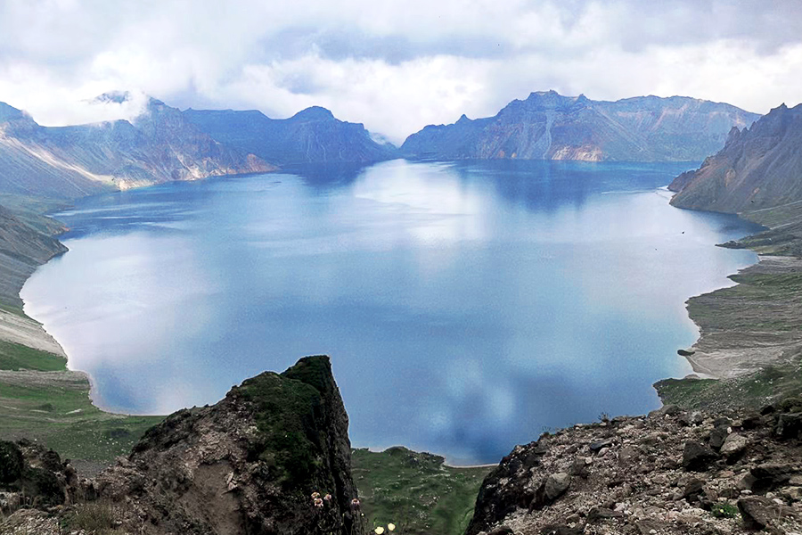
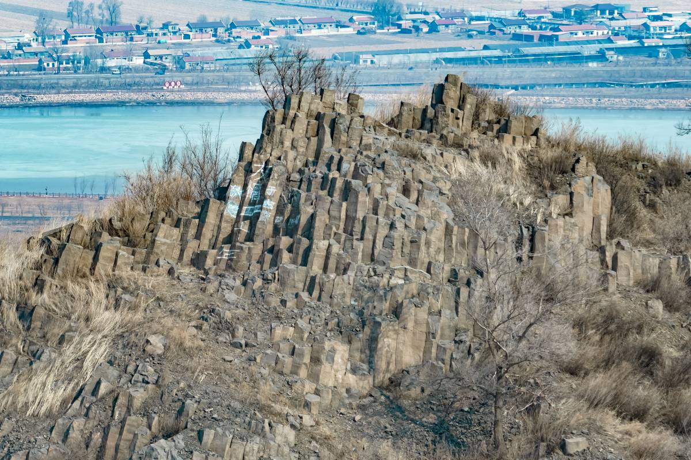
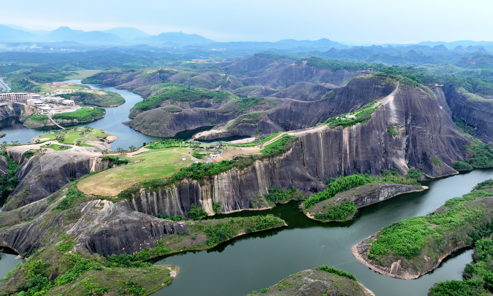

Changbai Mountain Scenic Area, a UNESCO World Heritage Site, has a branch easily accessible from Changchun (about a 4-hour drive), making it a top natural escape. Its core highlight is the Tianchi (Heavenly Lake), a crater lake formed by volcanic activity, with crystal-clear blue water surrounded by snow-capped peaks (even in summer). The area is also home to dense primeval forests, where you can spot rare flora like Korean pine and ginseng, as well as wildlife such as sika deer and red-crowned cranes (if lucky). In summer, the mountain is cool (average 15–20°C), while autumn brings vibrant red and gold foliage; winter covers everything in thick snow, ideal for snow viewing.
Summer (July–August): Cool climate, perfect for hiking and lake viewing; wildflowers bloom in the meadows.
Autumn (September–October): Stunning fall foliage, fewer crowds than summer.
Winter (December–February): Snowy wonderland, great for photography (but trails may be partially closed—check in advance).
Scenic Area Entry: 125 CNY/adult; 65 CNY/students (with valid ID); free for kids under 1.2 meters.
Shuttle Bus (mandatory, to access Tianchi): 85 CNY/person.
Cable Car (North Slope, optional): 130 CNY/one-way; 250 CNY/round-trip.

Yitong Volcano Group National Geopark, located about 60 kilometers from Changchun (1.5-hour drive), is one of China’s best-preserved volcanic landform clusters. It has over 16 volcanic cones, formed 2.7 million to 130,000 years ago, including the iconic Shilong Volcano (the tallest, 383 meters) and Xiaolong Volcano (with a well-preserved crater). The park’s landscape is unique: black volcanic rocks spread across the area, paired with green grasslands and small lakes (formed in volcanic craters), creating a "primitive and wild" natural scene. It’s a paradise for geology lovers and photographers, as the contrast between dark rocks and bright sky/grass is striking.
Spring (May–June): Grass turns green, and wildflowers (like asters) bloom, adding color to the volcanic rocks.
Autumn (August–September): Cool weather, no mosquitoes, and the grassland turns golden—great for hiking and photography.
Park Entry: 40 CNY/adult; 20 CNY/students (with valid ID); free for kids under 1.2 meters.
Guided Geology Tour (optional): 80 CNY/group (max 10 people), with a guide explaining volcanic formation history.

Xinlicheng Reservoir Scenic Area, 25 kilometers from Changchun’s city center, is a large man-made reservoir surrounded by forests and wetlands, known as "Changchun’s Back Garden of Water and Greenery." The reservoir covers 53 square kilometers, with calm blue water that reflects the sky and nearby trees. The surrounding area has dense poplar and willow forests, as well as wetland zones where you can see water birds like egrets and wild geese (especially in spring and autumn). It’s a popular spot for locals to escape the city—activities here focus on relaxation and close contact with nature, rather than intense sightseeing.
Spring (April–May): Birds migrate back, and trees bud—fresh and lively atmosphere.
Summer (June–August): Cool by the lake; perfect for cycling, fishing, and camping (avoid weekends for fewer crowds).
Autumn (October): Leaves turn yellow and red; the reservoir’s water is clear—great for photography.
Park Entry: Free (no charge to enter the scenic area).
Bicycle Rental: 20 CNY/hour; 100 CNY/day.
Fishing Gear Rental: 30 CNY/day.
Camping Site: 100 CNY/site/night (includes access to restrooms).